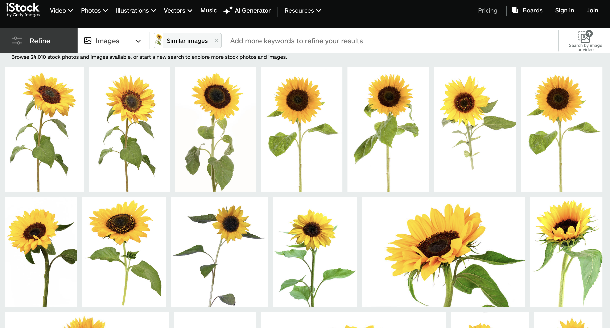
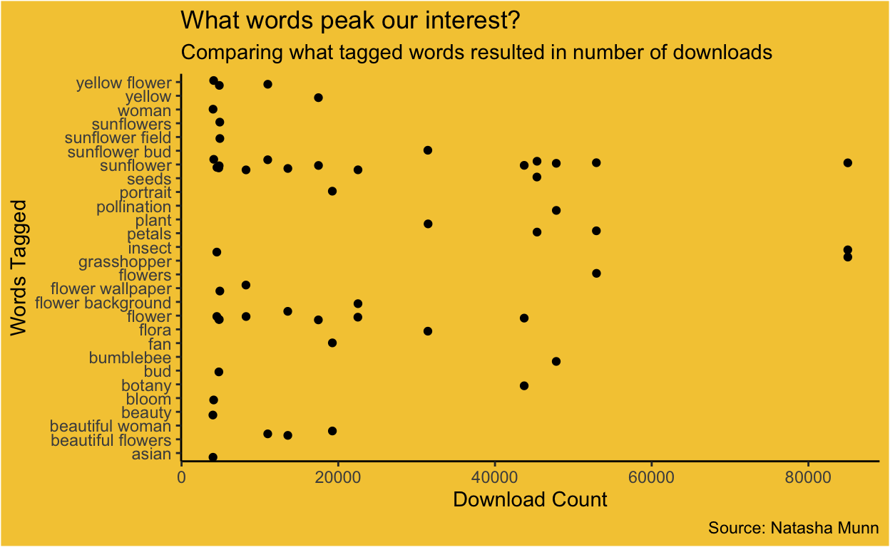

Using Pixabay to create of JSON dataset and manipulating it in RStudio!
Welcome back! Today, I will document my experience working with and interpreting JSON Data for the first time. JSON stores data in memory and can exchange data between systems and APIs. It is also human and computer-readable! Today, I will obtain my JSON data based on Pixabay images from the following Pixabay API explorer.
First, let’s load tidyverse, jsonlite, and the magick package.
To begin, I must narrow down my data frame. I searched for photos using the words “pretty” and “sunflower” in my query. I chose these words because sunflowers are my favourite type of flower, and I wanted to see some pretty ones! I was also interested in the range of photo types that would be returned (e.g., life-like or cartoon flowers and background or static image.)
These are the first few rows of results that come up when I search pretty sunflower in Pixabay’s royalty-free images to give you an example of what I’m working with:
 After putting my keywords into a query in my API, I obtained my JSON data set, which I will put into a data frame called pixabay_photo_data.
Now, it’s time to manipulate my data set. I filtered my data frame to limit the data to around 50 rows, selected the most interesting variables to explore, and mutated some new ones. This filtered dataset will be called selected_photos.
I created a variable called “petal,” which tells us whether or not the photo has the word petal as one of its tags, a variable telling us the number of characters in the user’s name, and a variable for the number of characters in the tagged word.
I also separated the rows of data so that every tagged word will show up as a different entity in the data (e.g., if one photo has the tagged words “flower” and “pretty,” it will show up twice in the dataset - once for each word.)
# MANIPULATE DATA FRAME TO CREATED "SELECTED_PHOTOS"
json_data <- fromJSON("pixabay_data.json")
pixabay_photo_data <- json_data$hits
selected_photos <- pixabay_photo_data %>%
filter(id > 7000000) %>%
select(previewURL, pageURL, tags, imageSize, views, downloads, likes, comments, user) %>%
separate_rows(tags, sep = ", ") %>%
mutate(petal_tag = ifelse(str_detect(str_to_lower(tags),
"petal"),
"petal tagged",
"petal not tagged")) %>%
mutate(user_length = nchar(user)) %>%
mutate(tag_char = nchar(tags))
write_csv(selected_photos, "selected_photos.csv")Here are some key findings of the data:
I also learned that when we group the data based on whether the word “petal” is tagged or not, the max tagged word for photos without a petal tag is 17 characters, compared to the images where petal is tagged, which only have a max tagged word of 7 characters.
# A tibble: 2 × 2
petal_tag max_tagged_word
<chr> <int>
1 petal not tagged 17
2 petal tagged 6Now, let’s create something with this data. I will be using the variable previewURL to create an animated GIF with the magick package that cycles through each photo and displays its tagged word. Here is a table of the URLs we will be using:
Woah! That’s a lot of links! I put this into an object called img_urls and used the paste function to put the tagged words for each image into an object we can use in our GIF text.
# ANIMATED GIF
img_urls <- selected_photos$previewURL %>% na.omit()
paste <- paste(selected_photos$tags) # knowledge from module 2
sunflower_gif <- image_read(img_urls) %>%
image_join() %>%
image_scale(400) %>%
image_annotate(paste, size = 20, gravity = "center", font = "Impact", color = "white") %>%
image_animate(fps = 0.8) # knowledge from module 1
sunflower_gifAnd voila! A beautiful display of the images and their corresponding tagged words! As you cycle through them, you’ll notice that some tagged words are more popular. Let’s use ggplot to visualise this.
# SUNFLOWER PLOT
creativity_plot <- ggplot(data = selected_photos) +
geom_jitter(aes(x = downloads,
y = tags)) +
labs(title = "What words peak our interest?",
subtitle = "Comparing what tagged words resulted in number of downloads", caption = "Source: Natasha Munn",
x = "Download Count",
y = "Words Tagged") +
theme_classic () +
theme(panel.background = element_rect(fill = "#F5CA41"),
plot.background = element_rect(fill = "#F5CA41"),
legend.background = element_rect(fill = "#F5CA41"),
legend.box.background = element_rect(fill = "#F5CA41"))
creativity_plot
It looks like the words sunflower, petals, and insect are the three most popular among users and are getting the highest number of downloads!
It’s been so cool turning image features into data! See you next time!